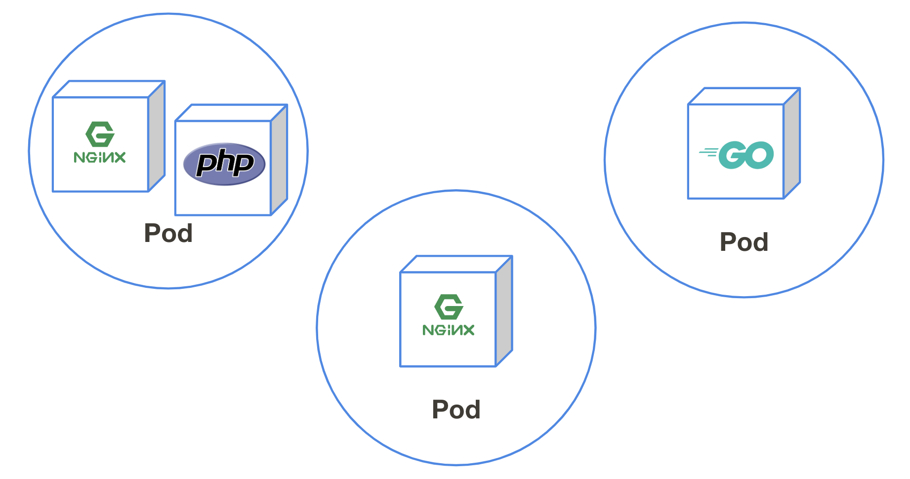

Pod

Podとは¶
1つ以上のコンテナグループのことPodと呼びます。
Kubernetesはコンテナを直接管理するのではなく、Podを介してコンテナを管理します。
実際にPodを動かしてみる¶
nginxイメージをKubernetes上で動かしてみましょう。
以下のコマンドでmynginxという名前をつけたnginxコンテナを実行します。
$ kubectl run mynginx --image nginx --restart Never pod/mynginx created
podが起動されたか確認してみましょう。
kubectl get pod と実行することで現在起動しているpodの一覧を見ることができます。
$ kubectl get pods NAME READY STATUS RESTARTS AGE mynginx 1/1 Running 0 17s
"mynginx"というpodが動いているのが見えましたね。
動作確認¶
nginxが動作しているかアクセスして確認してみましょう。
同様にポートフォワードを行ってローカルから確認を行います。
$ kubectl port-forward pod/mynginx 8080:80 Forwarding from 127.0.0.1:8080 -> 80
次にCloudShellのwebプレビュー機能でnginxのトップページが確認できれば成功です。
確認できたらポートフォワードを Ctrl + c で終了しましょう。
ログの確認¶
Kubernetesはコンテナの標準出力を閲覧する事が可能です。
先程アクセスしたnginxの標準出力を確認してみましょう、アクセスログが見えるはずです。
$ kubectl logs pod/mynginx 127.0.0.1 - - [12/Jul/2019:07:04:16 +0000] "GET /?authuser=0 HTTP/1.1" 200 612 "https://console.cloud.google.com/cloudshell/environment/view?project=be-ogi-yusuke" "Mozilla/5.0 (Macintosh; Intel Mac OS X 10_14_5) AppleWebKit/537.36 (KHTML, like Gecko) Chrome/75.0.3770.100 Safari/537.36" "111.108.92.1, 172.217.26.52" 127.0.0.1 - - [12/Jul/2019:07:04:17 +0000] "GET /robots.txt HTTP/1.1" 404 555 "-" "Mozilla/5.0 (Macintosh; Intel Mac OS X 10_14_5) AppleWebKit/537.36 (KHTML, like Gecko) Chrome/75.0.3770.100 Safari/537.36" "111.108.92.1, 172.217.26.52" 2019/07/12 07:04:17 [error] 6#6: *2 open() "/usr/share/nginx/html/robots.txt" failed (2: No such file or directory), client: 127.0.0.1, server: localhost, request: "GET /robots.txt HTTP/1.1", host: "127.0.0.1:8080" 127.0.0.1 - - [12/Jul/2019:07:04:17 +0000] "GET /favicon.ico HTTP/1.1" 404 555 "https://8080-dot-3725049-dot-devshell.appspot.com/?authuser=0" "Mozilla/5.0 (Macintosh; Intel Mac OS X 10_14_5) AppleWebKit/537.36 (KHTML, like Gecko) Chrome/75.0.3770.100 Safari/537.36" "111.108.92.1, 172.217.26.52" 2019/07/12 07:04:17 [error] 6#6: *3 open() "/usr/share/nginx/html/favicon.ico" failed (2: No such file or directory), client: 127.0.0.1, server: localhost, request: "GET /favicon.ico HTTP/1.1", host: "127.0.0.1:8080", referrer: "https://8080-dot-3725049-dot-devshell.appspot.com/?authuser=0"
より詳細な情報を知るには¶
kubectl get pods で現在起動されているpodを確認することがわかりましたが、
どんなコンテナがどんな設定で動いているのかの情報がこれだけだと少ないですね。
$ kubectl get pods NAME READY STATUS RESTARTS AGE mynginx 1/1 Running 0 28m
詳細な情報を知りたい場合は kubectl describe コマンドを使うと良いでしょう。
以下のように現在起動しているコンテナのIPやイメージID、Events（いつ起動したか・異常終了した場合はその理由）を表示することができます。
$ kubectl describe pod mynginx Name: mynginx Namespace: default Priority: 0 PriorityClassName: <none> Node: gke-standard-cluster-1-default-pool-0423aa15-rbfv/10.146.0.18 Start Time: Fri, 12 Jul 2019 15:37:34 +0900 Labels: run=mynginx Annotations: kubernetes.io/limit-ranger: LimitRanger plugin set: cpu request for container mynginx Status: Running IP: 10.0.2.7 Containers: mynginx: Container ID: docker://d77f313b33bff623d59f3f8c86869c1797ed9b8f28c7e54bd953e583cd204e54 Image: nginx Image ID: docker-pullable://nginx@sha256:00be67d6ba53d5318cd91c57771530f5251cfbe028b7be2c4b70526f988cfc9f Port: <none> Host Port: <none> State: Running Started: Fri, 12 Jul 2019 15:37:35 +0900 Ready: True Restart Count: 0 Requests: cpu: 100m Environment: <none> Mounts: /var/run/secrets/kubernetes.io/serviceaccount from default-token-mcw4s (ro) Conditions: Type Status Initialized True Ready True ContainersReady True PodScheduled True Volumes: default-token-mcw4s: Type: Secret (a volume populated by a Secret) SecretName: default-token-mcw4s Optional: false QoS Class: Burstable Node-Selectors: <none> Tolerations: node.kubernetes.io/not-ready:NoExecute for 300s node.kubernetes.io/unreachable:NoExecute for 300s Events: Type Reason Age From Message ---- ------ ---- ---- ------- Normal Scheduled 32m default-scheduler Successfully assigned default/mynginx to gke-standard-cluster-1-default-pool-0423aa15-rbfv Normal Pulling 32m kubelet, gke-standard-cluster-1-default-pool-0423aa15-rbfv pulling image "nginx" Normal Pulled 32m kubelet, gke-standard-cluster-1-default-pool-0423aa15-rbfv Successfully pulled image "nginx" Normal Created 32m kubelet, gke-standard-cluster-1-default-pool-0423aa15-rbfv Created container Normal Started 32m kubelet, gke-standard-cluster-1-default-pool-0423aa15-rbfv Started container
現在起動しているPodをyamlで表示することも可能です。
$ kubectl get pods mynginx -o yaml apiVersion: v1 kind: Pod metadata: annotations: kubernetes.io/limit-ranger: 'LimitRanger plugin set: cpu request for container mynginx' creationTimestamp: 2019-07-12T06:37:34Z labels: run: mynginx name: mynginx namespace: default :
お片付け¶
$ kubectl delete pod mynginx